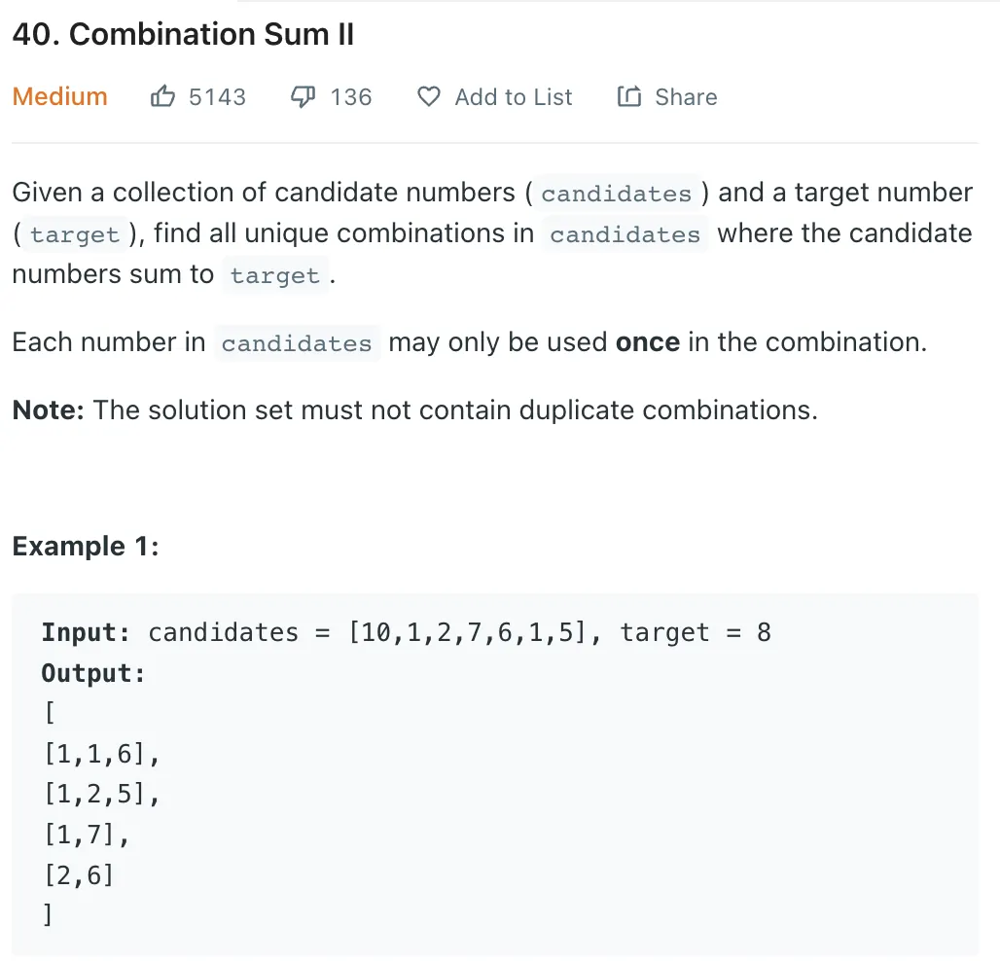
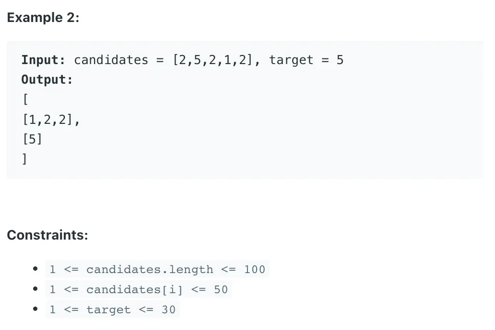

40. Combination Sum II
考過的公司：Asked by: Amazon
Question


✍🏽 My Solution
Runtime: 2 ms, faster than 99.95% of Java online submissions for Combination Sum II. Memory Usage: 42.3 MB, less than 94.12% of Java online submissions for Combination Sum II.
class Solution {
List<List<Integer>> result = new ArrayList<>();
public List<List<Integer>> combinationSum2(int[] candidates, int target) {
Arrays.sort(candidates);
List<Integer> path = new ArrayList<>();
dfs(candidates, target, 0, 0, path);
return result;
}
private void dfs(int[] nums, int target, int begin, int sum, List<Integer> path) {
if (sum == target) {
result.add(new ArrayList<Integer>(path));
return;
}
for (int i = begin; i < nums.length; i++) {
// 小剪枝
if (i > begin && nums[i] == nums[i-1]) continue;
// 大剪枝
if (sum + nums[i] > target) break;
path.add(nums[i]);
// 因为元素不可以重复使用，这里递归传递下去的是 i + 1 而不是 i
dfs(nums, target, i+1, sum + nums[i], path);
path.remove(path.size() - 1);
}
}
}
測試用
class Solution {
List<List<Integer>> result = new ArrayList<>();
public List<List<Integer>> combinationSum2(int[] candidates, int target) {
Arrays.sort(candidates);
List<Integer> path = new ArrayList<>();
dfs(candidates, target, 0, 0, path);
return result;
}
private void dfs(int[] nums, int target, int begin, int sum, List<Integer> path) {
if (sum == target) {
result.add(new ArrayList<Integer>(path));
return;
}
for (int i = begin; i < nums.length; i++) {
if (i > begin && nums[i] == nums[i-1]) continue;
if (sum + nums[i] > target) break;
path.add(nums[i]);
// 调试语句 ①
System.out.println("递归之前 => " + path + "，總和 = " + (sum + nums[i]));
dfs(nums, target, i+1, sum + nums[i], path);
path.remove(path.size() - 1);
// 调试语句 ②
System.out.println("递归之后 => " + path + "，總和 = " + (sum + nums[i]));
}
}
public static void main(String[] args) {
int[] candidates = new int[] {10, 1, 2, 7, 6, 1, 5};
int target = 8;
Solution solution = new Solution();
List<List<Integer>> res = solution.combinationSum2(candidates, target);
System.out.println("输出 => " + res);
}
}
🧠 Thought Process
- Why did I choose this particular implementation?
- 參考題解，題目跟 39. Combination Sum 差不多，只是多了限制組合裡面不能有重複數字
- 同原本39的解法，只是在for迴圈內調整以下程式
// 跟前一個數字相同就跳過
if (i > begin && nums[i] == nums[i-1]) continue;
// 這裡要從i改成i+1，才不會選到重複數字
dfs(nums, target, i+1, sum + nums[i], path);
- 測試輸入
`int[] candidates = new int[] {10, 1, 2, 7, 6, 1, 5};
int target = 8;`
遞歸過程如下
递归之前 => [1]，總和 = 1
递归之前 => [1, 1]，總和 = 2
递归之前 => [1, 1, 2]，總和 = 4
递归之后 => [1, 1]，總和 = 4
递归之前 => [1, 1, 5]，總和 = 7
递归之后 => [1, 1]，總和 = 7
递归之前 => [1, 1, 6]，總和 = 8
递归之后 => [1, 1]，總和 = 8
递归之后 => [1]，總和 = 2
递归之前 => [1, 2]，總和 = 3
递归之前 => [1, 2, 5]，總和 = 8
递归之后 => [1, 2]，總和 = 8
递归之后 => [1]，總和 = 3
递归之前 => [1, 5]，總和 = 6
递归之后 => [1]，總和 = 6
递归之前 => [1, 6]，總和 = 7
递归之后 => [1]，總和 = 7
递归之前 => [1, 7]，總和 = 8
递归之后 => [1]，總和 = 8
递归之后 => []，總和 = 1
递归之前 => [2]，總和 = 2
递归之前 => [2, 5]，總和 = 7
递归之后 => [2]，總和 = 7
递归之前 => [2, 6]，總和 = 8
递归之后 => [2]，總和 = 8
递归之后 => []，總和 = 2
递归之前 => [5]，總和 = 5
递归之后 => []，總和 = 5
递归之前 => [6]，總和 = 6
递归之后 => []，總和 = 6
递归之前 => [7]，總和 = 7
递归之后 => []，總和 = 7